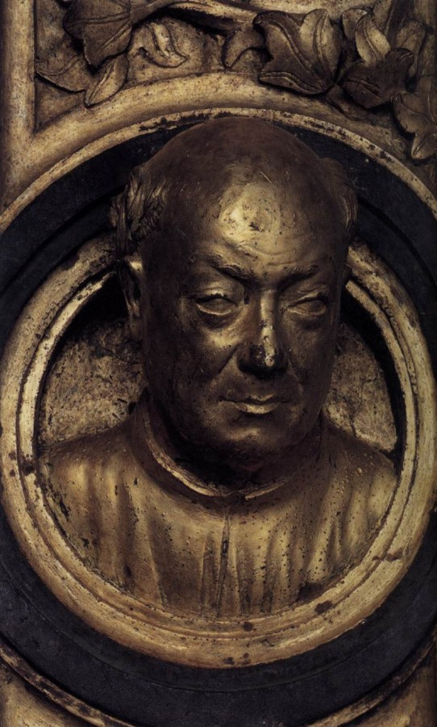
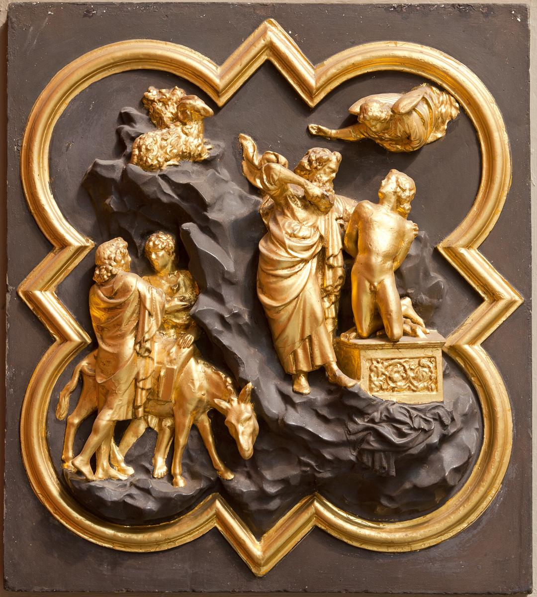

Лоренцо Гіберті
Лоренцо Гіберті (1381 — 1 грудня 1455) — італійський скульптор, ювелір, історик мистецтв. Представник раннього Відродження. Один із найкращих майстрів рельєфу. Жив у Флоренції. Доживши до шістдесят четвертого року, ставши жертвою хвороби, що перебігала з тяжкою і тривалою гарячкою, він помер, залишивши по собі безсмертну славу у творіннях, створених ним, і в написаних ним творах. Він був з почестями похований в Санта Кроче. Його зображення міститься на головних бронзових дверях храму Сан Джованні; це-лисий чоловік в орнаменті середній частині, коли двері закриті. Поруч з ним-голова Бартолуччо, його батька.
«Жертвопринесення Ісаака»
«Жертвопринесення Ісаака» — бронзовий рельєф скульптора родом з Флоренції Лоренцо Гіберті (1381—1455). Створений близько 1401/1402 року на так званих Других дверях Флорентійського баптистерію. Назву «двері Раю» (Порта-дель-Парадізо) отримали треті двері Гіберті, за легендою назву дав сам Мікеланджело, схваливши усю роботу митця. Гіберті знають як чудового скульптора, що підніс створення рельєфів на значну висоту. Але сам Гіберті вважав себе перш за все ювеліром. Він добре знав дорогоцінне каміння, милувався ювелірними виробами як інші картинами. Палка пристрасть до витворів ювелірного мистецтва спонукала Гіберті до прискіпливого опису своїх ювелірних виробів, про використаний матеріал, про його вагу, його ціну, коштовні камені, що були використані.
До своїх рельєфів він підійшов як до чергових ювелірних виробів. Вони не прямокутні. Для них використана складна форма квадріфоліума, яку Гіберті запозичив у майстрів Франції доби середньовіччя.Це квадрат, бічні боки якого збільшені півколами. В рамі такої складної форми розміщено і сюжет "Жертвопринесення Ісаака". Гіберті і показує момент, коли з небес спустився янгол і вказав Аврааму на іншу жертву.